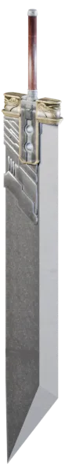
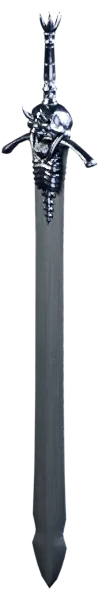
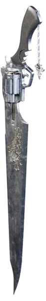
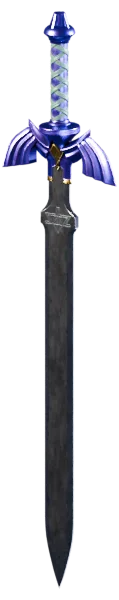
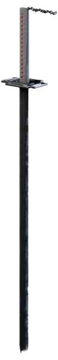
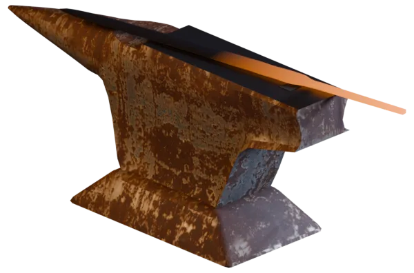

01 Yapay zekâ
Turkish RAG Eval
Türkçe sorularda bir arama sisteminin hangi parçasının gerçekten işe yaradığını ölçtüğüm deney.
Kodu GitHub’da gör
Yazıyı oku
Veri seti
RAG, bir dil modelinin cevap vermeden önce belgelerden ilgili parçaları bulup okuması demek. 12 farklı arama kurgusunu, elle etiketlediğim 58 soruluk Türkçe bir test setinde karşılaştırdım. Bütün sonuçlar tek komutla yeniden üretilebiliyor.
- Öne çıkan sonuç
- Kelimelerin ilk 5 harfini kök gibi kullanmak, arama başarısını (nDCG) tek başına %23–29 artırıyor. Ağır bir biçimbilim aracına gerek kalmıyor.
- Denediklerim
- Anahtar kelimeyle arama (BM25), anlamla arama (dense embedding), ikisinin birleşimi (hybrid RRF) ve 3 farklı metin bölme yöntemi
- Ölçtüklerim
- nDCG@10 · Recall@5 · MRR · P95 gecikme · Python

02 Oyun aracı
Match3 Lab
Match-3 oyunlarında seviye tasarlamayı ve zorluğunu ölçmeyi kolaylaştıran bir araç takımı.
Tarayıcıda oyna
Kodu GitHub’da gör
Oyunun kurallarını Unity’den bağımsız, saf C# ile yazdım; aynı kurallar oyunda da testlerde de botlarda da çalışıyor. Seviyeler elle yazılabilen sade bir biçimde duruyor. Botlar her seviyeyi binlerce kez oynayıp zorluğu sayıya döküyor.
- Ölçüm
- 6 seviye, her biri 1000 bot oyunuyla. Açgözlü ve rastgele botun kazanma oranları zorluk eğrisini çiziyor.
- Araçlar
- Komut satırı (validate · sim · curve · tune) · Unity seviye editörü · simülatör penceresi
- Kullandıklarım
- C# / .NET · Unity 6 · xUnit · WebGL

03 Unity aracı
TMP Glyph Audit
Oyundaki yazılarda fontta karşılığı olmayan harfleri, oyun çıkmadan bulan Unity paketi.
Kodu GitHub’da gör
Unity’de yazılar TextMeshPro ile çizilir; fontta olmayan bir harf (ğ ya da ş gibi) oyunda kutucuk olarak görünür. Paket bütün sahneleri, prefab’ları ve oyun sırasında yüklenen metin dosyalarını tarıyor, fontların yedek zincirini de hesaba katıp eksik harfleri raporluyor.
- Kullanımı
- Editördeki bir pencereden ya da otomatik derlemede (CI) komutla. Sonucu 0, 1 ya da 2 çıkış koduyla bildiriyor.
- Test
- 24 xUnit ve 5 EditMode testi
- Kullandıklarım
- C# · TextMeshPro · Unity 2023.2+ · açık kaynak, git adresiyle kurulur (UPM)

04 Oyun
Bilim Dedektifi
Gizemli bir ölümü araştıran bir dedektifin gözünden ilerleyen, eğitsel kısa bir macera oyunu.
itch.io’da indir
Hacettepe’de ders projesi olarak ekipçe geliştirdik. Oyun itch.io’da ücretsiz yayında.
- Durum
- Yayında · ücretsiz · Windows için indirilebilir
- Tür
- Eğitsel dedektif ve gizem oyunu
- Ekip
- Hacettepe ders projesi, ekip çalışması

05 Web
Code-Enigma
Matematik odaklı, öğrenciye göre şekillenen bir çalışma platformu.
Kodu GitHub’da gör
İlkhan Arda Akmaca ile birlikte geliştiriyoruz. Ben arayüz tarafındayım: kişisel paneli, öğrencinin kendini akranlarıyla karşılaştırdığı göstergeleri, filtreleri ve ayar ekranlarını yapıyorum.
- Bölümler
- Kişisel panel · Ölçme ve değerlendirme testleri · Video dersler
- Kullandıklarım
- React 19 · Vite · Tailwind CSS 4 · GSAP

Demirhane · Örste
Örsteki iş
Kişisel projeme bakıyorum.
Çekiç benim saatime göre iniyor; okuldaysam ya da uyuyorsam örsün üstünde bekliyor.
Demirhane · Açık kaynak
Açık kaynak katkıları
Kullandığım açık kaynak projelerde bulduğum hataları düzeltip sahiplerine gönderdiğim katkılar.
GitHub profilinde gör
Çoğu, yapay zekâ arama sistemlerini değerlendiren kütüphanelerde ve Unity araçlarında. Aşağıdaki sayılar, proje sahiplerinin kabul edip birleştirdiği değişiklikler (PR).
71 birleşen PR22 proje32 incelemede bekliyor
- MTEB15 PRRAG işimin dayandığı retrieval değerlendirme kütüphanesi
- kornia13 PRBilgisayarlı görü kütüphanesi; sayısal hesaplardaki uç durum hataları
- LightRAG4 PRRAG çatısı; metin ayrıştırma ve Markdown düzeltmeleri
- unity-mcp5 PRUnity editörünü yapay zekâya bağlayan köprü
- docling4 PRBelge okuma aracı; OCR modeli indirme ve eski dosya biçimi (AFP, EBCDIC) düzeltmeleri
Hakkımda
Rızgar Ozan
Oyun mekaniği, veri modeli ya da arayüz: parçaların birbirine nasıl bağlandığıyla uğraşmayı seven bir geliştiriciyim.
CV indir PDF
Ankara’da yaşıyorum, Hacettepe Üniversitesi’nde okuyorum ve bir yandan oyun geliştiriyorum. Bir şeyin çalıştığını söylemeden önce ölçmeyi alışkanlık edindim.
- Deneyim
- Barko Elektronik’te yazılım mühendisliği stajı, Temmuz–Ağustos 2026. İki kişilik ekipte şirketin kendi donanımında çalışan bir LLM altyapısı kurduk, FastAPI ve Docker ile veri servisleri yazdık. Kurumsal portalı Active Directory’ye bağladık.
- Eğitim
- Hacettepe Üniversitesi, Bilgisayar ve Öğretim Teknolojileri Eğitimi. Haziran 2027’de mezun oluyorum.
- Odak
- Türkçe arama ve RAG (Python) · Oyun geliştirme (Unity, C#)
- Araçlar
- Unity · C# · Python · React · JavaScript · Tailwind CSS · Git
- İlgi alanları
- Oyun tasarımı · Arayüz
Yazılar
Ölçüp yazdıklarım
Bir projede ölçtüğüm şeyi uzun uzun anlatmak istediğimde buraya yazıyorum.